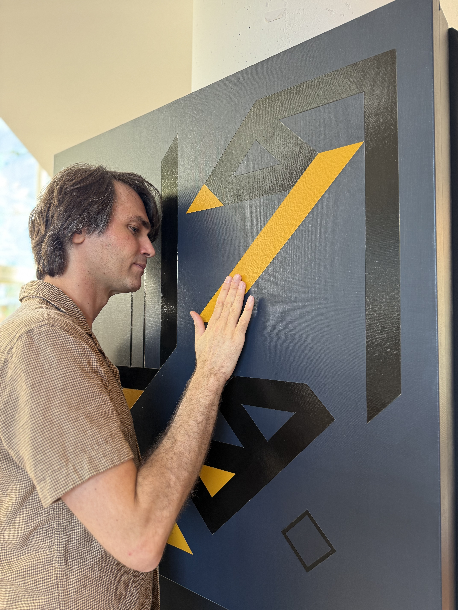

From Interactive Art to Relational Painting | The Emergence of Augmented Painting

This essay presents the conceptual framework underlying Perceptrum and the evolution of Sounding Canvas, introducing Augmented Painting as a new artistic medium and Relational Painting as a new curatorial paradigm.
What Augmented Painting Is and What Is Not
The term Augmented Painting does not refer to Augmented Reality. Unlike AR, which overlays digital content onto the physical world through external devices, Augmented Painting extends the painting itself through embedded technologies while preserving its identity as a painting.
Technology does not exist alongside the artwork nor is it visually superimposed upon it. Instead, it becomes part of the painting's material constitution, allowing the artwork to acquire new expressive capabilities without ceasing to be what it fundamentally is.
The concept follows the tradition of Augmented Musical Instruments, developed within the Computer Music and NIME (New Interfaces for Musical Expression) communities. An augmented musical instrument remains the same instrument while its expressive possibilities are expanded through embedded sensing, computation or actuation.
A violin remains a violin. A piano remains a piano. A guitar remains a guitar. Technology extends expression rather than replacing the instrument.
Perceptrum extends exactly the same conceptual framework from musical performance to painting.
The Four Principles of Augmented Painting
An Augmented Painting is founded upon four essential principles:
- The object remains itself.
- Its expressive capabilities are extended.
- Technology is embedded rather than superimposed.
- The identity of the original artistic medium is preserved.
An Augmented Painting remains a painting. Technology simply allows it to perceive, respond, communicate, remember, and establish relationships.
Why "Augmented"?
The word Augmented is intentionally borrowed from the field of Augmented Musical Instruments rather than Augmented Reality. In both cases, augmentation does not replace the original artistic medium but extends its expressive capabilities through embedded technologies. Just as an augmented violin remains a violin, an Augmented Painting remains a painting.
The concept therefore describes a transformation of the medium itself rather than the addition of external digital content. Augmentation concerns the expressive potential of the artwork, not the visual appearance of technology.
From Interactive Art to Augmented Painting
The conceptual evolution of Sounding Canvas represents a shift away from understanding the work as merely an example of interactive art toward defining it as a new artistic medium: Augmented Painting. While interactive art is primarily characterized by technological responsiveness, a painting that reacts to touch, Augmented Painting emphasizes the transformation of the painted surface itself into an entity with expanded expressive capabilities.
Through embedded sensing, computation, sound generation, artificial intelligence, and networking, the canvas acquires the ability to perceive, respond, communicate, remember, and participate in relationships rather than simply execute programmed reactions.
Technology as an Invisible Artistic Medium
This shift also implies a change in the role of technology. Electronic components, software, sensors, and communication protocols are not presented as the artwork itself, nor as technological novelties to be exhibited. Instead, they become embedded within the materiality of the painting, functioning as invisible artistic media that extend its expressive vocabulary.
Just as pigments, brushes, perspective, photography, or new pigments transformed painting throughout history, computation, networking, artificial intelligence, and sound become new artistic materials through which novel forms of pictorial expression emerge.
From Interaction to Dialogue
Interaction is no longer understood as a sequence of actions and reactions between a visitor and an object. Instead, it is reinterpreted as dialogue.
Dialogue may occur between a visitor and a painting, between multiple paintings, between visitors sharing the same exhibition, or between audiences separated by geographical distance. Meaning therefore emerges not from isolated interactions but from the relationships established among participants.
The Networked Painting
Within this framework, every Sounding Canvas becomes an autonomous Augmented Painting, possessing its own visual identity, sonic behaviour, memory, and capacity for communication. Each painting remains a complete artwork while simultaneously belonging to a larger ecosystem.
Networking consequently assumes a fundamentally artistic role. It is not introduced as a technological feature but as an artistic medium through which paintings establish relationships, exchange information, influence one another, and construct collective behaviours.
The network itself becomes part of the artistic language, allowing paintings to communicate across rooms, buildings, museums, cities, and eventually countries.
The Distributed Exhibition
This perspective naturally extends the concept of the exhibition itself. Rather than presenting a collection of independent artworks occupying the same physical space, the exhibition becomes an active component of the artwork.
Multiple groups of Augmented Paintings installed in different locations may remain permanently connected, allowing distant audiences to influence one another through shared sonic and visual experiences. Geography therefore ceases to represent a boundary for exhibition making and instead becomes one of its compositional dimensions.
The long-term vision of Perceptrum is the creation of geographically distributed exhibitions in which Augmented Paintings installed across museums, galleries, cultural institutions, and public spaces participate in a common artistic dialogue. Visitors encounter not isolated installations but different manifestations of the same evolving artwork.
Towards Relational Painting
From this perspective, Perceptrum is not simply creating interactive installations. It proposes Augmented Painting as a new artistic medium and Relational Painting as a new curatorial paradigm.
The artwork is no longer defined exclusively by its physical boundaries but by the dialogues it generates between paintings, audiences, institutions, and cultures. The exhibition evolves from a place where artworks are displayed into an active network where relationships themselves become part of the artistic material.
In this vision, painting expands beyond the canvas to become a living, distributed, and continually evolving cultural ecosystem.